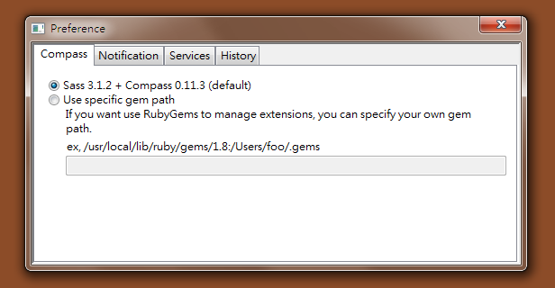

介紹
Sass 語法是種可延伸的 CSS，讓撰寫 CSS 時能更有彈性也更有效率。Compass 則是將 Sass 包含在內，同時再納入許多 Framework 與相關功能讓網頁設計人員快速與簡便再加倍，然而 Compass 是一套需要 Ruby 環境以及依靠指令的工具，這對前端設計師頗具門檻，為了能跨平台並介紹給更多設計師使用，和多將 Compass 包成一套桌面應用程式，讓所有設計師都能輕易體驗這種輕鬆寫 code 的快感。
下載
你可以在 Compass.app 網站購買並下載本桌面軟體，或是透過幫助找到你可能遇到的問題。
前置作業
讓 Dreamweaver 看懂 Sass
Compass.app 延伸應用原理用的是 Sass，用 Dreamweaver 寫 css 的話最好先修改 MMDocumentTypes.xml 好讓 Dreamweaver 看的懂 Sass。以下是 Adobe CS4 的路徑
"C:\Program Files\Adobe\Adobe Dreamweaver CS4\configuration\DocumentTypes"
- 開啟 MMDocumentTypes.xml
- 搜尋關鍵字 css 找到 winfileextension="css" macfileextension="css"
- 將以上字串改成 winfileextension="css,scss" macfileextension="css,scss"
安裝執行
檔案下載回來解壓縮後放置在任何你想要的位置，Compass.app 並不需要進行安裝動作，每次執行只要點擊 compass-app.exe 即可啟動。
 解壓縮後點開 compass.app 資料夾就可以看到 compass-app.exe 執行檔
解壓縮後點開 compass.app 資料夾就可以看到 compass-app.exe 執行檔
執行後工作列出現水滴狀羅盤圖示即表示程式已正常執行中，接下來點擊圖示即可進行下一步動作。
 尚未觀看（watch）任何資料夾前圖示是呈現暗灰色
尚未觀看（watch）任何資料夾前圖示是呈現暗灰色
開始新專案可透過 Create Compass Project 來建立需要的專案 Framework，若一開始不太確定或沒特別需求則可以先選擇 compass 的 project 進行。
 面對專案不同需求可建立不同的 Framework 執行
面對專案不同需求可建立不同的 Framework 執行
點選要執行的 Framework 後會出現新視窗要求輸入專案名稱以建立資料夾，這時也可以選擇要放置資料夾的位置，都確認後按存檔，程式就會在指定位置建立資料夾與相關檔案,建立完畢會出現提醒視窗（Notification），再點選 OK 按鈕即完成建立動作。
 建議專案資料夾盡可能取英文名稱
建議專案資料夾盡可能取英文名稱
專案資料夾建立後 compass.app 會自動進行 Watching 的動作，因此工作列的圖示也轉變成橘色。Watching 的用意在於針對此資料夾的 scss 檔案進行 compile 成為 css，而 scss 就是日後主要編輯的部分。
 一旦進行 Watching icon 即會換色
一旦進行 Watching icon 即會換色
開啟專案資料夾可看見程式所建立的相關檔案，當開始進行編輯後還會再自動生一份 compass_app_log.txt 對該專案進行動作的紀錄。
- .sass-cache - 存放 scss 的暫存資料夾，基本上可以不用太理會。
- sass - 實際會進行編輯的部分。
- stylesheets - 編輯 scss 後產生的 css 檔案存放資料夾。
- config.rb - compass.app 對相關參數的設定檔，這部分會在後面的功能再做進一步的介紹。

為了避免每次開新專案都要做一次個人習慣的前置作業環境，因此日後比較了解 compass.app 後可以先建立個人的 folder，新專案開始只要複製一份進行 Watching 就可以開工了。
進行到一半的專案也可以使用 compass.app，只要複製一份 .sass-cache 與 sass 到該專案資料夾中再進行 Watching 即可，但記得要將專案原本的 css 先更名保留一份（例如原本的 screen.css 先更名為 _screen.css），這樣 css 名稱與 sass 同名時才不會被覆蓋。
功能介紹
選單
compass.app 功能並不複雜，選單打開即可一目瞭然。

- Watching 顯示正在觀看的專案資料夾，如再點擊一次即可離開 Watching 狀態。
- Install 可對正在進行中的專案再增加需要的 Framework。
-
Change Options 對於編輯 scss 後輸出的 css 內容可做相關的設定：
輸出風格
- nested - 輸出的 css 會有層級縮排效果
- expanded - 標準模式
- compact - 所有屬性不會換行
- compressed - 所有換行、空白省略呈現壓縮狀態
選項設定
- Clean & Complie - 重新建立產生 css 檔案。
- History - 顯示曾經觀看 Watch 的專案名稱，也可直接選取進行 Watching 動作。
- Create Compass Project - 建立新專案。
- Preference - 偏好設定。
- About - 可以在這裡看到你所使用的 compass.app 版本。
- Quit - 關閉程式。
偏好設定
選單開啟 Preference 偏好設定會彈出新視窗進行，其中共有 Compass、Notification、Services、History 等相關設計。

- Compass 如果不是使用 Comment line 進行操作的使用者可以忽略這個選項使用預設即可。
- Notification 選擇哪些選項變動後會出現通知，以及選擇是否要在專案資料夾中產生記錄檔。
- Services 可啟動簡便的 server 方便使用絕對路徑在相關檔案上，另外還可裝 livereload 擴充套件，在啟用 server 與開啟 livereload 功能的情況下，只要 html 或 css 有所更新瀏覽器便會自動刷新頁面。
- History 可以在此清除專案紀錄。
如何使用
Sass 網站提供了一些範例可參考，還可對照同樣風格用 sass 與 css 差別在哪裡，另外 Compass 網站也有許多文件與範例，或是由這了解幾個快速入門。
核心框架（Core Framework）
Compass 提供了許多強大的框架，需要時在 scss 裡 @import 後再 @include 進 style 即可
@import "compass/reset";
@import "compass/css3";
button {
@include border-radius(10px);
@include box-shadow(rgba(0,0,0,0.5), 0 ,10px, 20px);
}
除了可快速套用之外，css3 方面 Compass 會自動生出符合各瀏覽器的程式碼（-moz, -webkit, -o），當然 IE9 之前的版本 除外。
要載入哪些框架全憑個人需求，Core Framework 分為幾大類，之下還有許多小分類，偷懶的可 @import "compass"; 載入 CSS3、Typography、Utilities 三個核心框架。另外 Compass 還提供 Blueprint，詳細內容可參閱 Compass Blueprint Module。
巢狀結構（Nesting）
這應是 Compass 的最大特色了，巢狀結構好處是不需贅述父層名稱，讓層級複雜的結構能更清楚的呈現。
#header {
margin-bottom: 50px;
h2 {
font-size: 24px;
color: red;
a { display: block; }
}
ul.nav {
@include clearfix;
li { float:left; }
}
}
另外對於偽元素也可以直接用“&”符號來取代原本的選擇器名稱
a {
color: #000;
text-decoration: none;
&:visited {
color: #red;
}
&:hover, &:active {
text-decoration: underline;
}
}
因為 & = 自己，所以在 ie hack 中可以這樣寫
ul li {
background: url(transparent.png);
.ie6 & {
background: #ff0000;
}
}
ie6 不支援 png 透明圖，所以 hack 直接給背景色。另外提供用 sass 的垂直置中 demo。
變數（Variables）
變數可應用的範圍很廣，Sass 提供了許多函數，主要應用在色彩管理方面，比較簡易的應用是在定義識別色或區塊通用間距之類的，這在大型專案中會是好幫手。
$cis-color: #f90;
$margin: 20px;
#header {
background: $cis-color;
}
a, h1, h2, h3, h4, h5 {
color: $cis-color;
}
.section {
padding: $margin / 2;
margin-bottom: $margin;
}
假設企業識別色為橘色 #f90，在 header 背景色、連結、標題等都要採用該顏色，此時使用 "$" 定義後即可大量套用，如果企業修改識別色成為橘紅色，那麼只要修改成 $cis-color: #f40; 即可。
margin、padding 等也可採用這種方式。在變數中是允許使用數學運算的，因此可以用 $margin / 2 這樣的運算來取得我們想要的值。色碼部分的數學運算應用則有 lighten、darken 這類函數可用。
選擇繼承（Selector Inheritance）
相當好用、省工的功能，利用 @extend 的宣告方便快速的將某個選擇器的樣式完整載入。
.main {
border: 1px #000;
background: #eee;
h2 {
font-size: 16px;
color: #f40;
}
}
.sidebar {
@extend .main;
background: #fff;
}
以上方式 .sidebar 就會載入 .main 產生以下的 css 樣式
.main, .sidebar {
border: 1px #000;
background: #eee;
}
.main h2, .sidebar h2 {
font-size: 16px;
color: #f40;
}
.sidebar {
background: #fff;
}
@extend 好處是很多面的，一些常用的甚至可以先整理寫好一份放著，享受真正的事半功倍快感。
.menu, .menu li {
margin: 0;
padding: 0;
list-style-type: none;
li {float: left;}
}
混合（Mixins）
Mixins 可定義的範圍更廣，方法是定義好之後再用 @include 的方式載入使用
@mixin rounded-top {
$side: top;
$radius: 10px;
border-#{$side}-radius: $radius;
-moz-border-radius-#{$side}: $radius;
-webkit-border-#{$side}-radius: $radius;
}
#navbar li { @include rounded-top; }
#footer { @include rounded-top; }
此範例是宣告 @mixin 後加進變數再套進圓角框，之後 @include 載入使用。Mixins的用法相當多樣，請參考官方 Sass Documentation 說明文件有完整介紹。
Sprite Image
Compass 內建了合併圖檔 Sprites 的強大功能，以往用 photoshop 一張一張合併後還需要算出 X、Y 的實際位置，Compass Sprites 則是自動合併並且連圖檔實際位置也一併算好。
做法一開始將需要合併的圖檔個別切割命名好，再全部丟進 images/icons 或其他適當名稱的資料夾內，如此 compass 動作完成時就可以在 images 資料夾底下產生合併好的新圖。
@import "compass/utilities/sprites";
$icon-sprite: sprite-map("icons/*.png", $spacing: 20px);
這裡示範的是 sprite-map 的作法。先 import 加入 sprites 這個功能，上面原始碼中 icon-sprite 是給這次動作的命名，"icons/*.png" 是這次要合併的資料夾名稱與檔案類型，如果每個圖檔之間希望有 20px 的間隔就可以用 spacing 這個參數做宣告。其它可用參數請參考 Sprite Helpers 的介紹。要注意的是，當進行以上宣告後 compass.app 需要重新進行 watching 的動作。
進行完以上動作後 compass 會開始進行合併生出新圖檔，而我們要套用時只要給動作名稱以及合併前的原始圖檔名稱即可。
h1 {
float:left;
margin:0;
a {
display:block;
float:left;
background: sprite($icon-sprite, logo) no-repeat;
width:100px;
height:40px;
text-indent:-9999em;
&:hover { background: sprite($icon-sprite, logo-hover) no-repeat; }
}
}
當位置（background-position）需要微調時可將數字加在圖檔名稱後方
.disable {
background: #aaa sprite($icon-sprite, arrow-12px-disable, 7px, 5px) no-repeat;
}
如遇到往後更新需要加入新圖檔時也不需要全部重來一次了，把新增的圖檔丟進 icons 底下照本宣科就可以收工了。